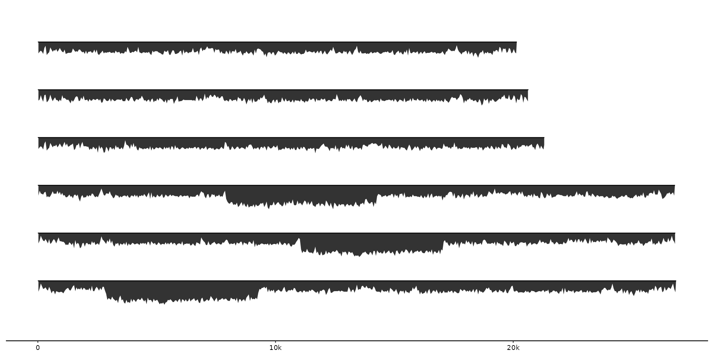
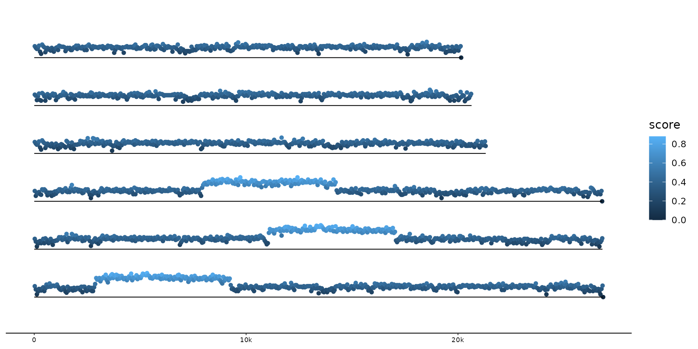
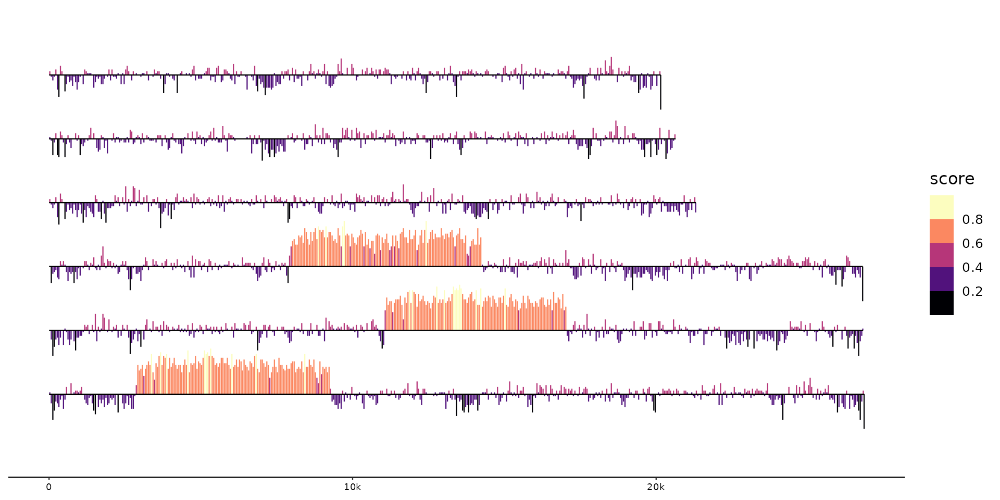

Visualize data that varies along sequences as ribbons, lines, lineranges, etc.
geom_wiggle( mapping = NULL, data = feats(), stat = "wiggle", geom = "ribbon", position = "identity", na.rm = FALSE, show.legend = NA, inherit.aes = TRUE, offset = 0, height = 0.8, bounds = Hmisc::smedian.hilow, ... )
| offset | distance between seq center and wiggle mid. |
|---|---|
| height | distance in plot between wiggle low and high. |
| bounds | mid, low and high boundary value for plotting wiggle data. Can be a function or a vector returning those three values. Defaults to Hmisc::smedian.hilow. |
geom_wiggle() understands aesthetics depending on the
chosen underlying ggplot geom, by default ggplot2::geom_ribbon(). Other
options that play well are for example ggplot2::geom_line(),
ggplot2::geom_linerange(), ggplot2::geom_point(). The only required
aesthetic is:
z
# Plot varying GC-content along sequences as ribbon gggenomes(seqs=emale_seqs, feats=emale_gc) + geom_wiggle(aes(z=score)) + geom_seq()#> #> #> #># customize color and position gggenomes(genes=emale_genes, seqs=emale_seqs, feats=emale_gc) + geom_wiggle(aes(z=score), fill="lavenderblush3", offset=-.3, height=.5) + geom_seq() + geom_gene()#> #> #> #># GC-content as line and with variable color gggenomes(seqs=emale_seqs, feats=emale_gc) + geom_wiggle(aes(z=score, color=score), geom="line", bounds=c(.5,0,1)) + geom_seq() + scale_colour_viridis_b(option="A")#> #> #> #># or as lineranges gggenomes(seqs=emale_seqs, feats=emale_gc) + geom_wiggle(aes(z=score, color=score), geom="linerange") + geom_seq() + scale_colour_viridis_b(option="A")#> #> #> #>